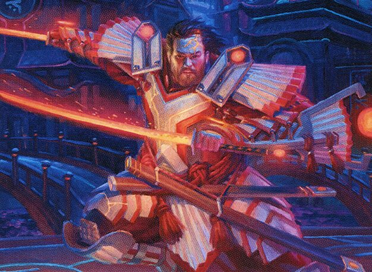

Sauron, the Dark Lord
Unter dem Schnitt
Das Deck gewinnt 18 % seiner Partien – der Schnitt am Vierertisch liegt bei 25 %.
- Stufe · Elo
- C 1378 Platz 51 von 64 in der Rangliste bis 200 €
- Siegquote
- 18 % 92,2 Siege in 508 Partien, mit 90 % Sicherheit zwischen 16 und 21 %
- Platzierungen
- 130 %12×
- 215 %6×
- 332 %13×
- 422 %9×
Dort ein neues Deck anlegen und die Liste beim Import einfügen.
- Preis
- 194,44 €von 200,00 €
- Partien
- 522in 52 Turnieren, 14 am Zeitlimit nicht gewertet
- Karten
- 10036 Länder, davon 14 Standard
- Game Changer
- 2höchstens 3 erlaubt
- Kombos
- 1komplett im Deck
- Regelcheck
- Bestanden100 Karten, Farben, Bannliste
Höchstens 200 € inklusive Commander. Steigen die Preise darüber, wird die Kaufliste automatisch neu gebaut.
Stärken und Schwächen
Aus 498 ausgewerteten Partien in 51 Turnieren (mit den Listen, die im Turnier gespielt wurden). Partien am Zeitlimit zählen wie in der Rangliste nicht. Werte in Klammern: Schnitt aller Decks derselben Preisklasse. Die genauen Zahlen siehst du, wenn du mit der Maus auf einen Punkt zeigst oder ihn antippst.
Spielweise: gewinnt über den Kampf – 92 % des Schadens an Gegnern ist Kampfschaden · So gewinnt es: 21 % der Siege durch Überleben – die Gegner schalteten sich gegenseitig aus (Schnitt aller Decks: 32 %)
Stärken
- Unbeeindruckt von Gegenzaubern Tendenz28 % Siege wenn die Gegner 2+ Gegenzauber wirkten, 13 % ohne Gegenzauber (Schnitt aller Decks: 23 % zu 25 %) · 109 / 256 Partien
- Macht viel Druck deutlichØ 35 Schaden an Gegnern je Partie (Schnitt aller Decks: 30) · 498 Partien
Schwächen
- Angriffe werden oft geblockt deutlich25 % der Angreifer geblockt (Schnitt aller Decks: 18 %) · 4480 Angreifer in 498 Partien
- Abhängig vom Commander Tendenzohne ihn nur 3 % Siege, mit ihm 21 % · 62 Partien ohne, 436 mit Commander
- Braucht lange zum Sieg deutlichSiege im Schnitt erst im 13. eigenen Zug (Schnitt aller Decks: 12.) · 92 Siege
- Wird oft als Erstes ausgeschaltet deutlichin 34 % der Partien (Schnitt aller Decks: 25 %) · 168 von 497 Partien
Gegen wen es gewinnt
Siegquote an Tischen, an denen dieser Commander mitspielte – nur Gegner aus der aktuellen Rangliste mit mindestens 20 gemeinsamen Partien. Am Vierertisch liegt der Schnitt bei 25 %.
Gewinnt oft gegen
 47 %von 34
47 %von 34 43 %von 35
43 %von 35 35 %von 40
35 %von 40
Tut sich schwer gegen
 4 %von 25
4 %von 25 4 %von 24
4 %von 24
5 %von 21
Spielstil
ReanimatorAmass+1/+1 Counters
Anzahl Karten je Aufgabe – Ø ist der Schnitt unserer Ranglisten-Decks (Strich im Balken). Der Reiter „Aufbau“ vergleicht stattdessen mit dem EDHREC-Durchschnittsdeck dieses Commanders.
Mit einem anderen Commander vergleichen
Commander (1)
- Sauron, the Dark Lord19,17 €
Kreaturen (20)
- Orcish BowmastersGame Changer34,73 €
- Witch-king of Angmar Interaktion11,10 €
- Lord of the Nazgûl3,90 €
- Orcish Siegemaster1,58 €
- Notion Thief KartenziehenGame Changer1,49 €
- Smaug, Wicked Worm Kartenziehen1,33 €
- The Balrog of Moria Interaktion1,16 €
- Saruman, the White Hand1,01 €
- Wonder0,95 €
- Moria Scavenger Kartenziehen0,90 €
- Sauron, Lord of the Rings0,80 €
- Anger0,70 €
- Archfiend of Ifnir Kartenziehen0,68 €
- The Great Goblin0,58 €
- Sauron, the Necromancer Interaktion0,42 €
- Corsairs of Umbar0,35 €
- Mauhúr, Uruk-hai Captain0,14 €
- Grishnákh, Brash Instigator0,13 €
- The Mouth of Sauron0,10 €
- Gothmog, Morgul Lieutenant0,08 €
Spontanzauber (11)
- Swan Song Interaktion12,63 €
- An Offer You Can't Refuse B Interaktion3,42 €
- Arcane Denial A Interaktion2,10 €
- Dark Ritual A1,66 €
- Counterspell B Interaktion1,11 €
- Sauron's Ransom0,65 €
- Consider0,50 €
- Lazotep Plating Schutz0,29 €
- Orcish Medicine Schutz0,14 €
- Saruman's Trickery Interaktion0,12 €
- Thrill of Possibility Kartenziehen0,04 €
Hexereien (14)
- Reanimate A8,49 €
- Living Death Board WipeKI schwach4,19 €
- Toxic Deluge Board WipeKI kann nicht3,25 €
- Blasphemous Act B Board WipeKombo1,27 €
- Victimize B0,68 €
- Summons of Saruman0,40 €
- Faithless Looting KartenziehenKI kann nicht0,36 €
- Ringsight0,22 €
- Feed the Swarm Interaktion0,17 €
- Claim the Precious Interaktion0,15 €
- Birthday Escape0,11 €
- Foray of Orcs Interaktion0,09 €
- Treason of Isengard0,08 €
- Mordor Muster0,06 €
Artefakte (12)
- Relic of Sauron Ramp10,51 €
- My Precious // Allure of Power Schutz1,25 €
- Sol Ring B Ramp0,75 €
- Fellwar Stone A Ramp0,69 €
- Talisman of Indulgence A Ramp0,66 €
- Talisman of Creativity B Ramp0,63 €
- Talisman of Dominance B Ramp0,51 €
- Dimir Signet Ramp0,41 €
- Arcane Signet B Ramp0,37 €
- Mind Stone A Ramp0,14 €
- Commander's Sphere C Ramp0,10 €
- Inherited Envelope Ramp0,10 €
Verzauberungen (6)
- Call of the Ring Kartenziehen4,24 €
- In the Darkness Bind Them2,11 €
- One Ring to Rule Them All Board Wipe1,33 €
- Fall of Cair Andros InteraktionKombo0,27 €
- Dreadhorde Invasion0,22 €
- March from the Black Gate0,13 €
Länder (36)
- The Black Gate9,90 €
- Mount Doom7,76 €
- Watery Grave7,64 €
- Blood Crypt7,34 €
- Steam Vents7,27 €
- Barad-dûr1,58 €
- Dragonskull Summit0,76 €
- Sulfurous Springs0,76 €
- Underground River0,76 €
- Drowned Catacomb0,57 €
- Rogue's Passage0,25 €
- Sulfur Falls0,25 €
- Crumbling Necropolis0,24 €
- Choked Estuary0,23 €
- Sunken Hollow0,23 €
- Foreboding Ruins0,21 €
- Smoldering Marsh0,21 €
- Exotic Orchard0,20 €
- Command Tower0,16 €
- Path of Ancestry0,12 €
- Terramorphic Expanse0,06 €
- Evolving Wilds0,04 €
- 7× Swamp
- 3× Mountain
- 4× Island
Upgrade auf bis 300 €
Du hast dieses Deck bis 200 €? Das getestete Deck bis 300 € spielt diese Karten anders – oben die, mit denen es am häufigsten gewinnt.
9 Karten anders · +103,56 € · Platz 51 → Platz 54
- Animate Dead +9 % Siege, wenn gespielt5,50 €
- Nazgûl +5 % Siege, wenn gespielt22,09 €
- Mystic Remora9,52 €
- Polluted Delta18,51 €
- Shadowspear18,13 €
- Bloodstained Mire16,98 €
- Morphic Pool10,01 €
- Windfall4,24 €
- Gríma, Saruman's Footman2,55 €
Dafür raus (9)
Choked Estuary, Consider, Dimir Signet, Dreadhorde Invasion, Foreboding Ruins, Mordor Muster, Smaug, Wicked Worm, Terramorphic Expanse, Wonder
Starthand ziehen
Sieben zufällige Karten aus diesem Deck – so siehst du, wie sich der Start anfühlt. Der Commander liegt wie im Spiel nicht im Stapel.
Kombos im Deck (1)
Laut Commander Spellbook mit dieser Kartenliste möglich. Was eine Kombo genau braucht, steht dort. Ob eine Kombo in Partien wirklich zusammenkam, steht im Reiter „Partien“.
- Fall of Cair Andros + Blasphemous Act → ∞ +1/+1-Marken auf einer Kreatur, Fast ∞ Schaden an Kreaturen
Für die Forge-KI angepasst
Die Liste oben ist die beste getestete Fassung, so wie du sie in echten Partien spielen würdest. Ein paar Karten kann die Forge-KI nicht spielen – sie wurden im Turnier durch andere ersetzt (dabei baut der Deckbauer im Budget auch andere Plätze um). Die Siegquote stammt aus Partien mit diesen Ersatzkarten; die Originalkarten selbst sind nicht von der KI getestet.
- Dimir Signet: Ausgleich für eine andere ersetzte Karte
- Faithless Looting: KI kann sie nicht spielen
- Swan Song: Ausgleich für eine andere ersetzte Karte
- Toxic Deluge: KI kann sie nicht spielen
- Wonder: Ausgleich für eine andere ersetzte Karte
- Animate Dead: Ersatz
- Bilbo, Retired Burglar: Ersatz
- Gríma, Saruman's Footman: Ersatz
- Spiteful Banditry: Ersatz
- Voracious Fell Beast: Test
Die Partien in Zahlen
- Commander gewirkt
- 100 %der Partien, in 10 % bis zum 4. Zug
- Schaden je Partie
- 35Schnitt: 30
- Siege im Schnitt
- Zug 12,9eigener Zug, Schnitt: 11,9
- Als Erstes ausgeschieden
- 34 %168 von 497 Partien, Schnitt: 25 %
- Zu wenig Länder
- 9 %der Partien, davon 10 gewonnen, Schnitt: 9 %
- Mulligans
- 8 %41 in 498 Partien, Schnitt: 7 %
Karten mit messbarem Einfluss
Ein Zusammenhang, kein Beweis: Diese Karten kamen in Siegen deutlich öfter ins Spiel.
- Sauron, Lord of the Rings – gewonnen in 38 % der Partien, in denen sie gewirkt wurde (53), sonst 16 %
- Notion Thief – gewonnen in 38 % der Partien, in denen sie gewirkt wurde (53), sonst 16 %
- Sol Ring – gewonnen in 32 % der Partien, in denen sie gewirkt wurde (95), sonst 15 %
Was die Partien zeigen
Aus 498 ausgewerteten Partien in 51 Turnieren (mit den Listen, die im Turnier gespielt wurden). Partien am Zeitlimit zählen wie in der Rangliste nicht. Werte in Klammern: Schnitt aller Decks derselben Preisklasse. „deutlich“: klar belegt. „Tendenz“: zeichnet sich ab, ist aber noch nicht sicher.
Schaden pro Partie alle Partien
Schaden an Gegnern pro Partie, gerechnet über alle 498 Partien – was die Karte insgesamt beiträgt
- Orc Army Token Ø 11,1traf in 314 von 498 Partien
- Sauron, the Dark Lord Ø 7,8traf in 261 von 498 Partien
- The Great Goblin Ø 1,6traf in 61 von 498 Partien
Schaden bei Einsatz wenn sie trifft
Gesamtschaden ÷ Partien, in denen die Karte Schaden gemacht hat – ihre Stärke im Einsatz
- Orc Army Token Ø 17,6traf in 314 von 498 Partien
- Sauron, the Dark Lord Ø 14,8traf in 261 von 498 Partien
- Sauron, Lord of the Rings Ø 13,5traf in 34 von 498 Partien
Top-Finisher schaltet Gegner aus
Karten, die am häufigsten einen gegnerischen Commander aus der Partie genommen haben
- Orc Army Token 133×498 Partien im Deck
- Sauron, the Dark Lord 38×498 Partien im Deck
- The Balrog of Moria 20×498 Partien im Deck
Beste Interaktion räumt auf
Gegnerkarten, die beim Auflösen dieser Karte zerstört, verbannt, zurückgeschickt oder neutralisiert wurden (ohne Spielsteine)
- Sauron, the Dark Lord 684×Ø 1,4 pro Partie · 498 Partien im Deck
- Living Death 271×Ø 0,5 pro Partie · 498 Partien im Deck
- One Ring to Rule Them All 142×Ø 0,3 pro Partie · 498 Partien im Deck
Größte Hindernisse blockt am meisten
Gegnerische Karten, die die Angreifer dieses Decks am häufigsten geblockt haben – insgesamt 25 % der 4480 Angreifer geblockt, davon 10 % durch Flieger oder Reichweite
- Goblin Token 25×blockte in 10 Partien
- Plant Token 25×blockte in 8 Partien
- Glarb, Calamity's Augur 22×blockte in 18 Partien
Selten gewirkt Kandidaten zum Tauschen
Karten dieser Liste, die in ihren Partien am seltensten gewirkt wurden – oft zu teuer oder zu langsam (Länder ausgenommen)
- Foray of Orcs 0 %gewirkt in 0 von 498 Partien
- Sauron's Ransom 0 %gewirkt in 0 von 498 Partien
- Victimize 3 %gewirkt in 14 von 488 Partien
Siege nach Zug Tempo
In welchem eigenen Zug die 92 Siege kamen
- bis Zug 70 %
- Zug 8–95 %
- Zug 10–1130 %
- Zug 12–1327 %
- ab Zug 1437 %
Kombos im Spiel deutlich Fall of Cair Andros + Blasphemous Act: alle Teile gewirkt in 14 Partien, davon 2 gewonnen
Elo-Verlauf
Elo nach jedem Turnier, älteste links. Gestrichelt: Stufengrenzen S, A, B, C.
Jetzt 1378, am höchsten 1391 (09.11.), am niedrigsten 1294 – aus 52 Turnieren.
Letzte Partien
Platz in jeder Partie zu viert, älteste links: Gold = Sieg, Silber = 2, Bronze = 3, rot = 4, Ring = Remis.
1443442332331133214114442131332123311341In den letzten 40 Partien 12× Sieg, 6× Platz 2, 13× Platz 3 und 9× Platz 4.
Manakurve ohne Länder
Durchschnitt 3,06
Aufgaben im Deck
Anzahl / Richtwert aus dem EDHREC-Durchschnittsdeck (der Strich), rot heißt deutlich darunter. Strategie: die übrigen Karten ohne eine dieser Aufgaben, etwa die Kreaturen und Effekte, um die sich das Deck dreht. Zusammen 63 Karten ohne Länder.
Kartentypen
- Kreaturen20
- Spontanzauber11
- Hexereien14
- Artefakte12
- Verzauberungen6
- Länder36
Teuerste Karten
Was das Programm gelernt hat
In jedem Turnier testet das Deck eine Karte. Ein Urteil gibt es erst ab 40 Partien mit und ohne die Karte. Weil das Deck jedes Turnier mit aktuellen Preisen und Daten neu gebaut wird, können getestete Karten später wieder herausfallen.
- besser Gríma, Saruman's Footman statt Victimize · Siegquote 27 % mit, 15 % ohne (140 / 368 Partien)
- schlechter Gollum, Patient Plotter statt Wonder · Siegquote 15 % mit, 28 % ohne (388 / 120 Partien)
- schlechter Worn Powerstone statt Dimir Signet · Siegquote 14 % mit, 23 % ohne (290 / 218 Partien)
- schlechter Glorious Gale statt Voracious Fell Beast · Siegquote 15 % mit, 23 % ohne (318 / 190 Partien) · aus einer früheren Fassung, heute nicht im Deck
- kein klarer Unterschied Nasty End statt Consider · Siegquote 14 % mit, 19 % ohne (88 / 420 Partien)
- kein klarer Unterschied Bilbo, Retired Burglar statt Worn Powerstone · Siegquote 21 % mit, 16 % ohne (198 / 310 Partien) · aus einer früheren Fassung, heute nicht im Deck
- kein klarer Unterschied Consider statt Smaug, Wicked Worm · Siegquote 17 % mit, 22 % ohne (408 / 100 Partien)
- kein klarer Unterschied Widespread Brutality statt Soothing of Sméagol · Siegquote 22 % mit, 18 % ohne (50 / 458 Partien) · aus einer früheren Fassung, heute nicht im Deck
10 weitere getestete Karten sammeln noch Partien.
Kaufliste für Cardmarket
Liste kopieren, auf Cardmarket unter „Wants“ eine neue Liste anlegen und einfügen.
Zusammen 194,44 € Cardmarket-Durchschnitt vom 27.11.2026
Cardmarket Wants öffnenPreise ohne Versand. Einzelne Karten können bei Cardmarket inzwischen teurer oder günstiger sein.
Gespielt von der Forge-KI, zu viert. Ein durchschnittliches Deck gewinnt 25 %. Wie wird getestet?